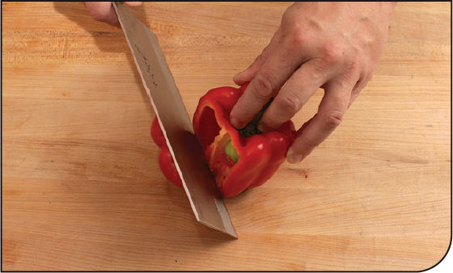
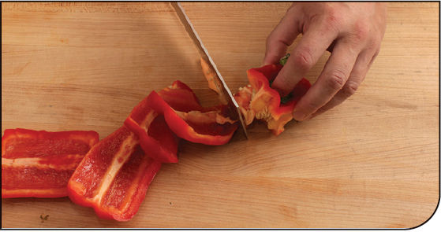
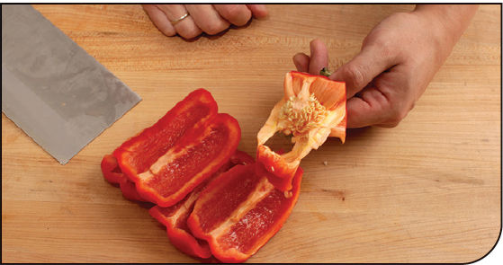
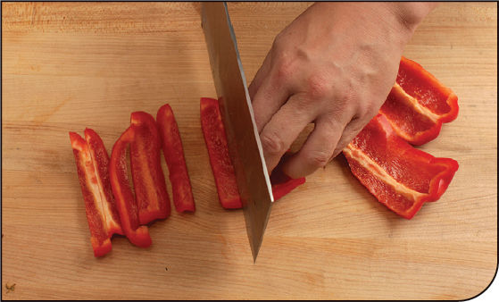
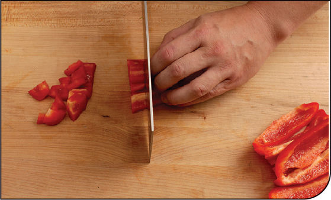
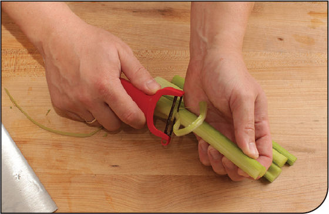
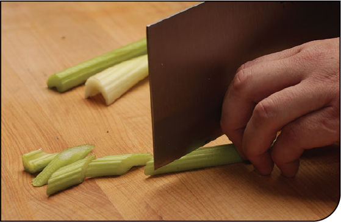
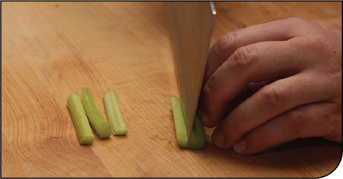
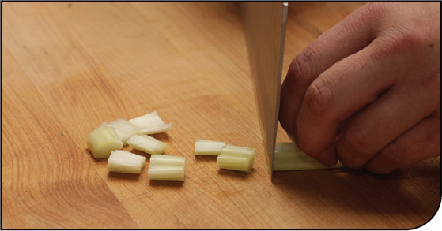

KNIFE SKILLS
How to Cut Bell Peppers for Stir-Fries
Step 1 • Slice Down a Valley

Hold the pepper upright on your cutting board. Notice that the pepper has multiple deep valleys that run from top to bottom. These valleys are an indication of where the spongy interior pith (the stuff we want to remove) is attached to the outer walls (the stuff we want to keep).
Using a very sharp chef’s knife or paring knife, slice downward, following the contour of one of these valleys to remove a section of the pepper’s wall.
Step 2 • Work Around


Continue making similar slices, working your way around the pepper until every section of pepper wall has been removed and you are left with the stem, seeds, and pith all in one piece that can now be discarded or composted.
Step 3 • Cut into Spears or Dice

For spears or julienne: Slice each section lengthwise into pieces as thick or thin as the recipe calls for.

For dice: Start by cutting sections into spears, then rotate 90 degrees and cut crosswise to create dice.
How to Cut Celery for Stir-Fries
Step 1 • Peel the Outer Layers

Peeling celery is not entirely necessary, but it removes the stringy fibers around the outside of each rib, which have a tendency to stick between your teeth. Using a vegetable peeler, peel this stringy outer layer off the celery rib.
Step 2 • Cut the Celery

For crescents: Cut the celery rib crosswise either directly perpendicular to its length or on a bias into ¼-inch crescents. Use for dishes where meat is cut into wider slices, such as Cumin Lamb (here).

For batons: Cut the celery rib crosswise into 2- to 3-inch segments, then cut each segment lengthwise into thin batons. Use in dishes where meat is cut into thin julienne strips, such as Dry-Fried Beef (here).

For dice: Split the celery rib lengthwise in half for large dice or into quarters for fine dice. Rotate and cut each strip crosswise into evenly sized dice. Use in dishes with diced meat, such as Kung Pao Chicken (here).